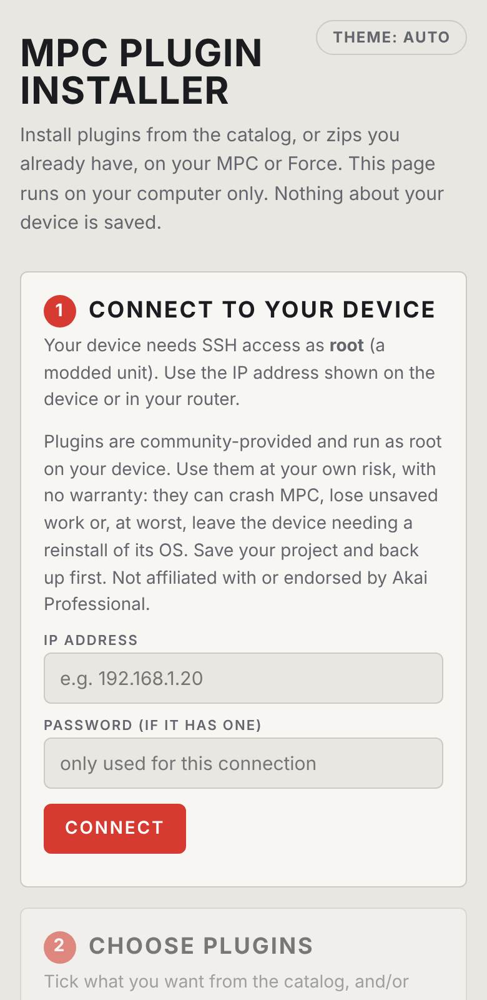
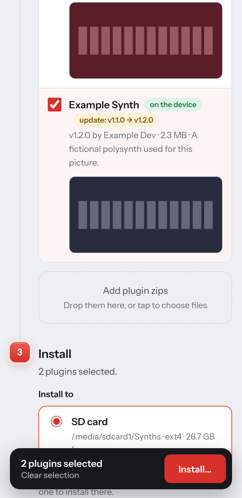
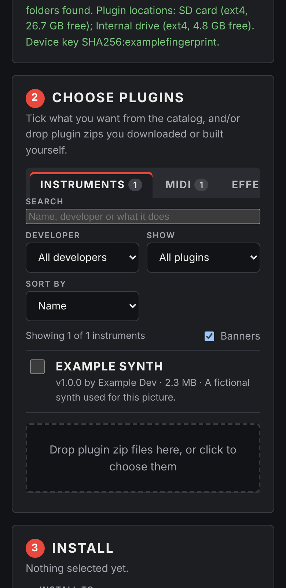
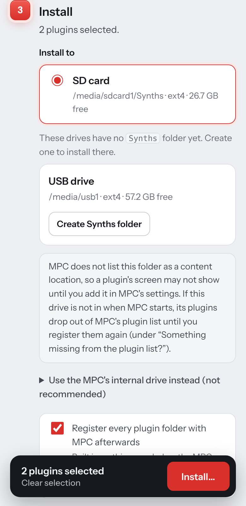
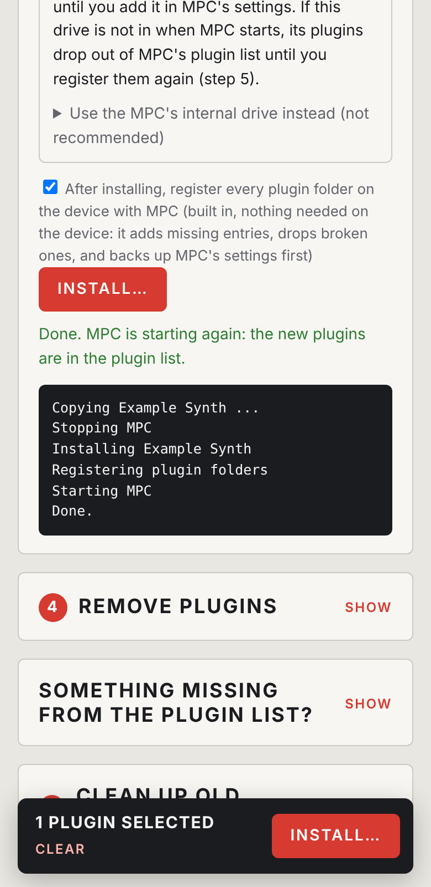

Install, update and remove VST plugins on a modded Akai MPC or Force from your phone.
mpc-installer-<version>-android.apk from the project's release page on GitHub, in your phone's browser.While the app is open it shows a small notification, "MPC Installer is running". That is intentional: it stops Android from cutting the app's Wi-Fi connection when you switch to another app in the middle of a copy.

192.168.1.50.The app shows what it found: the device type, the plugin folders already on it, and the places plugins can go. It also shows the device's key fingerprint. If it changes between sessions for the same MPC, be careful: it can mean you are talking to a different device. Nothing about the device is saved on the phone.


The list is the catalog's newest stable release of every downloadable plugin. Use the tabs (Instruments, MIDI, Effects, Addins, All), the search box, the developer filter, the sort and the "show" filter (not on the device, on the device, updates available, only the ones you ticked) to find what you want. Tick the plugins; what you ticked stays ticked while you filter. A bar at the bottom shows the count and an Install button.
You can also add your own release zips with choose zips, which opens the phone's file picker. A zip is checked before it is accepted.
Plugins already on the device are flagged, and so are updates. Catalog downloads are checked against the catalog's checksums before anything is copied; a mismatch installs nothing.

Under Install to the app lists the drives it found under /media that already have a Synths folder, with the free space on each. Pick one. It is chosen for you when there is only one.
If a card or drive has none, the page lists it with a Create Synths folder button. Tap it and the app makes the folder on that drive, then selects it. Install stays off until a place is chosen; the app never installs somewhere you did not pick.
The internal drive is hidden behind "Use the MPC's internal drive instead (not recommended)". It is the MPC's built-in flash storage (eMMC): every install, update and file a plugin writes adds wear, and if it fails the MPC itself needs repair. A card, USB drive or SSD is cheap to replace. Open that section and tick "I understand" only if you have no other choice.
Under the choices there is a tick box, on by default: after installing, register every plugin folder on the device with MPC. This is built into the app, so nothing has to be on the MPC. It adds missing entries to MPC's plugin list, drops broken ones, and backs up MPC's settings first.

The app copies every package to a private folder on the device, stops MPC once, runs each plugin's installer, registers the plugin folders, starts MPC once and removes the temporary copies. MPC is started again even if something fails, and nothing after a failing plugin is installed.
Phones sometimes cut a connection (Wi-Fi sleep, a VPN, switching apps). If it drops during the copy, the app reconnects, checks that the device's key is unchanged, and copies once more. Until every copy has finished, nothing is installed and MPC has not been stopped.
Open 4 Remove plugins (tap Show). It lists the plugin folders on the device. Tick the ones to remove and tap Remove…. The app stops MPC once, backs up MPC's settings, takes the plugin out of the plugin list, deletes the plugin's folder and starts MPC again.
Installing already registers its plugins, so most people never need this box. Open it (tap Show) when a plugin folder is on the device but MPC does not show it. Typical causes: you copied a folder in by hand, or MPC forgot it because a card was out when it started.
The box shows how many folders are waiting. Tap Register…: the app adds the missing entries, drops entries whose plugin file is gone, leaves everything else alone, backs up MPC's settings first, and restarts MPC once.
Every install, removal and registering leaves a copy of MPC's settings file (MPC.settings.bak-…) on the device. They are small but nothing deletes them. In 5 Clean up old backups choose how many of the newest to keep (10 is a good number) and tap Delete older backups…. The newest backup is never deleted, and MPC is not restarted.
| You see | Try this |
|---|---|
| Connect times out | Wrong IP, the MPC is asleep, or the phone is on another network (mobile data, guest Wi-Fi). Look the IP up again. |
| Permission denied | Wrong password, or this unit has no root SSH access. |
| "Not an MPC OS device" | The address belongs to another computer. Check the IP. |
| Install is greyed out | No install location is chosen. Pick a drive, or create a Synths folder on one (section 5). |
| "software caused connection abort" | The phone cut the connection. The app reconnects and retries once by itself. If it still fails, stay in the app, keep the screen on, and try again. Nothing is installed after a failed copy. |
| Plugin only shows "Load Plugin" | Restart the MPC with the drive in, then register the folders (section 8). The drive may have been mounted noexec at that moment. |
| Plugin screen is empty | The folder is not one of MPC's content locations, or the plugin has no skin for your MPC OS version (MPC OS 2.x versus 3.x). |
| Not enough room, or drive refused | Free space on the drive, or use an ext4 drive: FAT, exFAT and NTFS cannot hold symbolic links. |
| Catalog does not load | The phone has no internet. The catalog and plugin downloads need it; the MPC does not. |
| Play Protect blocks the APK | Use the APK from the project release (it targets current Android). Choose More details then Install anyway if it still asks. |
tools/android/README.md. The app is the desktop installer (tools/desktop) in an Android wrapper, so the desktop and Android apps share the same page and behaviour.Screens shown use invented example plugins and an example IP address. This manual describes version 1.0.0. The app was tested offline against a simulated device; test a first install on your own MPC with a saved project.